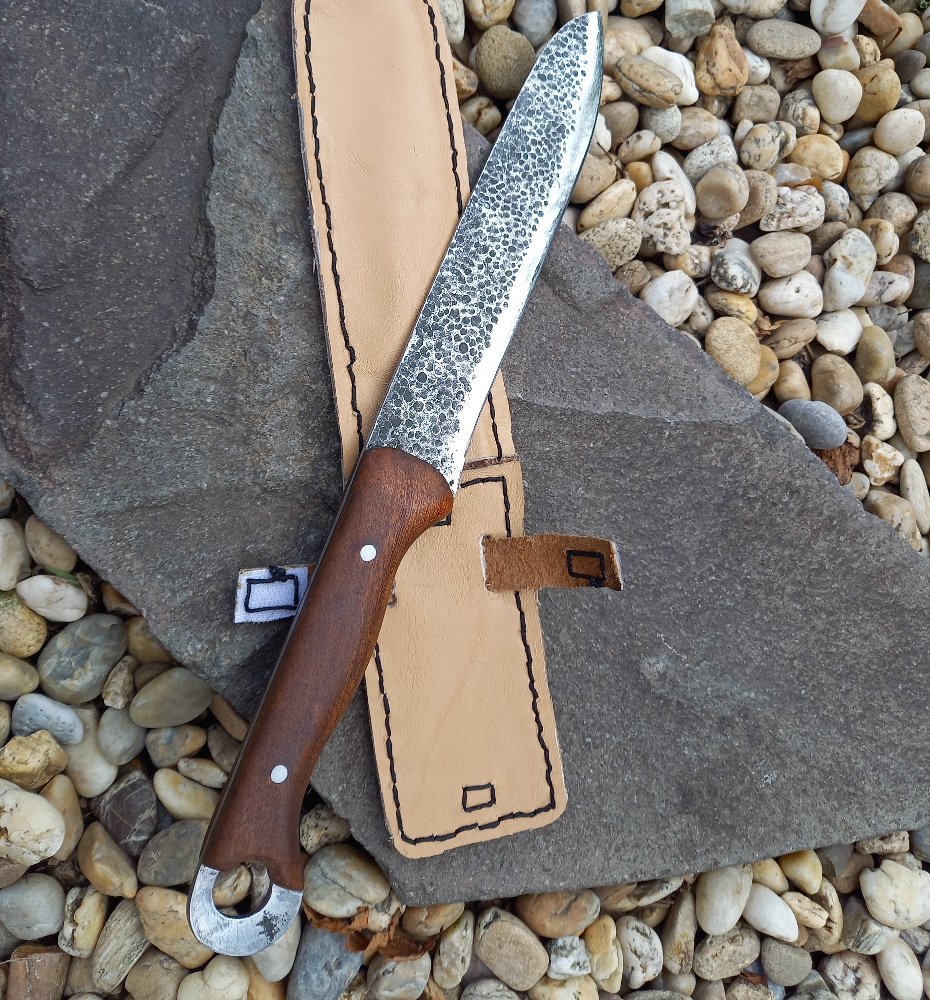
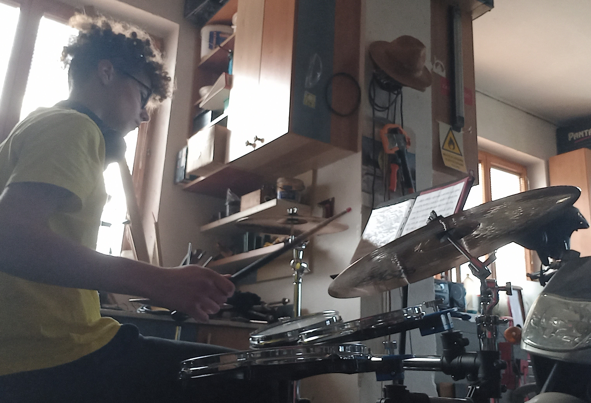

Moje meno je
Matúš Matiščák
a keď ma chcete spoznať lepšie, tak
choďte dole


Mám 16 rokov a momentálne študujem
programovanie, tvorenie webových stránok a
sieťové technológie na Slovensku. Keď o mne chcete
vedieť viac kliknite tu
Na základnej škole som patril k najlepším žiakom a reprezentoval som školu, kde som získal veľa ocenení. Veľkou výzvou bolo pre mňa, pre aký odbor sa rozhodnúť. Stále ma fascinovala oblasť IT. Moji rodičia ma v tomto smere podporovali. Preto som sa rozhodol študovať tento odbor.
Riešenie logistikých úloh a projektov zadaných učiteľom.
Toto je ukážka môjho polročného projektu zo školy. Je to statická webová stránka, ktorá je iba po slovensky. K jej prístupu kliknite tu.

Vždy som bol fanúšikom chladných zbraní, a aj preto som sa pridal do klubu, kde môžem trénovať s mečom a učiť sa ako ľudia dakedy bojovali.

Začal som kuť, keď som mal 14 rokov a ešte stále ma to baví. Zatiaľ som spravil 3 nože. Tu je fotka jedného z nich.
Hrajem na bicie od 11 rokov a mám rád veľa žánrov, ale mojími obľúbenými sú rock, metal a aj stredoveká hudba.
E-mail: matusmatiscak3@gmail.com
Telefónne číslo: 0940 166 301
Lokácia mojej školy: